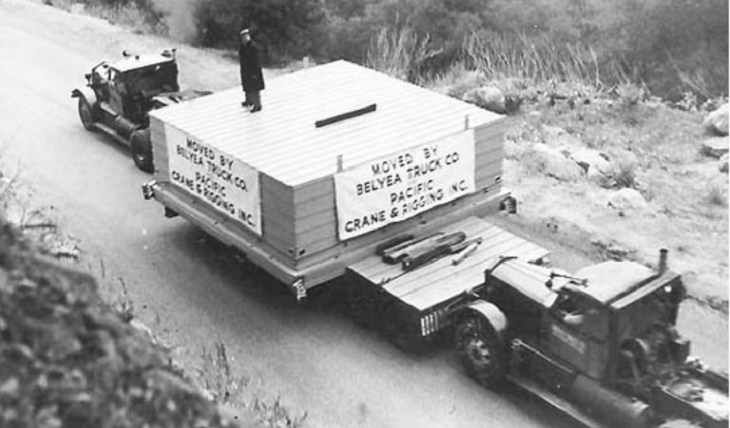

Moving a Lab On The Cheap

Recently, the authors of Lab On The Cheap have been taking part in a lab relocation across the US of A. We want to write something about this process, but we need some help from you. It's weird that we are having trouble writing about this, because there are a lot of articles on this.
And yet, we don't have any good advice to give you about moving. There are three reasons for this:
1. How daunting a lab move can be depends on how far you are moving. We are moving across a continenet, somewhere out there I bet some unlucky folks are moving from one continent to another, but at a smaller scale Georgia Tech has a pretty good article about moving across the street, that includes this nice summary video:
2. It also depends on your field. An Astronomy Instrumentation lab has very different challenges than a Molecular Biology lab. We like this post by LabManager for getting a general idea of moving your lab no matter your field.
and the big reason we don't have good suggestions is
3. We don't know what doesn't work. So far, no obvious things have gone wrong, and it will be a while yet (and probably another move or two) before we start to have opinions on what we could have done better. So we'd like to you to share your lab moving disaster stories with us, and what you might do differently in the future! (Unless you instruct us otherwise, all stories will remain anonymous)